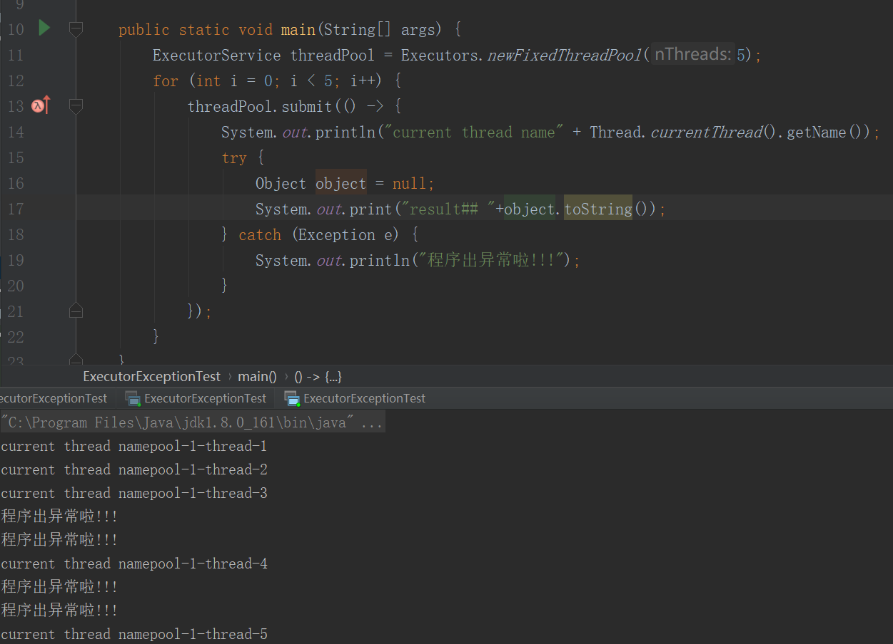

原文连接:https://www.cnblogs.com/jay-huaxiao/p/11454416.html
前言
掌握线程池是后端程序员的基本要求，相信大家求职面试过程中，几乎都会被问到有关于线程池的问题。我在网上搜集了几道经典的线程池面试题，并以此为切入点，谈谈我对线程池的理解。如果有哪里理解不正确，非常希望大家指出，接下来大家一起分析学习吧。
经典面试题
- 面试问题1：Java的线程池说一下，各个参数的作用，如何进行的?
- 面试问题2：按线程池内部机制，当提交新任务时，有哪些异常要考虑。
- 面试问题3：线程池都有哪几种工作队列？
- 面试问题4：使用无界队列的线程池会导致内存飙升吗？
- 面试问题5：说说几种常见的线程池及使用场景?
线程池概念
线程池： 简单理解，它就是一个管理线程的池子。
- 它帮我们管理线程，避免增加创建线程和销毁线程的资源损耗。因为线程其实也是一个对象，创建一个对象，需要经过类加载过程，销毁一个对象，需要走GC垃圾回收流程，都是需要资源开销的。
- 提高响应速度。 如果任务到达了，相对于从线程池拿线程，重新去创建一条线程执行，速度肯定慢很多。
- 重复利用。 线程用完，再放回池子，可以达到重复利用的效果，节省资源。
线程池的创建
线程池可以通过ThreadPoolExecutor来创建，我们来看一下它的构造函数：
public ThreadPoolExecutor(int corePoolSize, int maximumPoolSize,long keepAliveTime,TimeUnit unit,
BlockingQueue<Runnable> workQueue,
ThreadFactory threadFactory,
RejectedExecutionHandler handler) 几个核心参数的作用：
- corePoolSize： 线程池核心线程数最大值
- maximumPoolSize： 线程池最大线程数大小
- keepAliveTime： 线程池中非核心线程空闲的存活时间大小
- unit： 线程空闲存活时间单位
- workQueue： 存放任务的阻塞队列
- threadFactory： 用于设置创建线程的工厂，可以给创建的线程设置有意义的名字，可方便排查问题。
- handler： 线城池的饱和策略事件，主要有四种类型。
任务执行
线程池执行流程，即对应execute()方法：

- 提交一个任务，线程池里存活的核心线程数小于线程数corePoolSize时，线程池会创建一个核心线程去处理提交的任务。
- 如果线程池核心线程数已满，即线程数已经等于corePoolSize，一个新提交的任务，会被放进任务队列workQueue排队等待执行。
- 当线程池里面存活的线程数已经等于corePoolSize了,并且任务队列workQueue也满，判断线程数是否达到maximumPoolSize，即最大线程数是否已满，如果没到达，创建一个非核心线程执行提交的任务。
- 如果当前的线程数达到了maximumPoolSize，还有新的任务过来的话，直接采用拒绝策略处理。
四种拒绝策略
- AbortPolicy(抛出一个异常，默认的)
- DiscardPolicy(直接丢弃任务)
- DiscardOldestPolicy（丢弃队列里最老的任务，将当前这个任务继续提交给线程池）
- CallerRunsPolicy（交给线程池调用所在的线程进行处理)
为了形象描述线程池执行，我打个比喻：
- 核心线程比作公司正式员工
- 非核心线程比作外包员工
- 阻塞队列比作需求池
- 提交任务比作提需求
- 当产品提个需求，正式员工（核心线程）先接需求（执行任务）
- 如果正式员工都有需求在做，即核心线程数已满），产品就把需求先放需求池（阻塞队列）。
- 如果需求池(阻塞队列)也满了，但是这时候产品继续提需求,怎么办呢？那就请外包（非核心线程）来做。
- 如果所有员工（最大线程数也满了）都有需求在做了，那就执行拒绝策略。
- 如果外包员工把需求做完了，它经过一段（keepAliveTime）空闲时间，就离开公司了。
好的，到这里。面试问题1->Java的线程池说一下，各个参数的作用，如何进行的? 是否已经迎刃而解啦，
我觉得这个问题，回答：线程池构造函数的corePoolSize,maximumPoolSize等参数，并且能描述清楚线程池的执行流程 就差不多啦。
线程池异常处理
在使用线程池处理任务的时候，任务代码可能抛出RuntimeException，抛出异常后，线程池可能捕获它，也可能创建一个新的线程来代替异常的线程，我们可能无法感知任务出现了异常，因此我们需要考虑线程池异常情况。
当提交新任务时，异常如何处理?
我们先来看一段代码：
ExecutorService threadPool = Executors.newFixedThreadPool(5);
for (int i = 0; i < 5; i++) {
threadPool.submit(() -> {
System.out.println("current thread name" + Thread.currentThread().getName());
Object object = null;
System.out.print("result## "+object.toString());
});
}
显然，这段代码会有异常，我们再来看看执行结果
虽然没有结果输出，但是没有抛出异常，所以我们无法感知任务出现了异常，所以需要添加try/catch。
如下图：

OK，线程的异常处理，我们可以直接try...catch捕获。
线程池exec.submit(runnable)的执行流程
通过debug上面有异常的submit方法（建议大家也去debug看一下,图上的每个方法内部是我打断点的地方），处理有异常submit方法的主要执行流程图：
//构造feature对象
/**
* @throws RejectedExecutionException {@inheritDoc}
* @throws NullPointerException {@inheritDoc}
*/
public Future<?> submit(Runnable task) {
if (task == null) throw new NullPointerException();
RunnableFuture<Void> ftask = newTaskFor(task, null);
execute(ftask);
return ftask;
}
protected <T> RunnableFuture<T> newTaskFor(Runnable runnable, T value) {
return new FutureTask<T>(runnable, value);
}
public FutureTask(Runnable runnable, V result) {
this.callable = Executors.callable(runnable, result);
this.state = NEW; // ensure visibility of callable
}
public static <T> Callable<T> callable(Runnable task, T result) {
if (task == null)
throw new NullPointerException();
return new RunnableAdapter<T>(task, result);
}
//线程池执行
public void execute(Runnable command) {
if (command == null)
throw new NullPointerException();
int c = ctl.get();
if (workerCountOf(c) < corePoolSize) {
if (addWorker(command, true))
return;
c = ctl.get();
}
if (isRunning(c) && workQueue.offer(command)) {
int recheck = ctl.get();
if (! isRunning(recheck) && remove(command))
reject(command);
else if (workerCountOf(recheck) == 0)
addWorker(null, false);
}
else if (!addWorker(command, false))
reject(command);
}
//捕获异常
public void run() {
if (state != NEW ||
!UNSAFE.compareAndSwapObject(this, runnerOffset,
null, Thread.currentThread()))
return;
try {
Callable<V> c = callable;
if (c != null && state == NEW) {
V result;
boolean ran;
try {
result = c.call();
ran = true;
} catch (Throwable ex) {
result = null;
ran = false;
setException(ex);
}
if (ran)
set(result);
}
} finally {
// runner must be non-null until state is settled to
// prevent concurrent calls to run()
runner = null;
// state must be re-read after nulling runner to prevent
// leaked interrupts
int s = state;
if (s >= INTERRUPTING)
handlePossibleCancellationInterrupt(s);
}通过以上分析，submit执行的任务，可以通过Future对象的get方法接收抛出的异常，再进行处理。
我们再通过一个demo，看一下Future对象的get方法处理异常的姿势，如下图：
其他两种处理线程池异常方案
除了以上1.在任务代码try/catch捕获异常，2.通过Future对象的get方法接收抛出的异常，再处理两种方案外，还有以上两种方案：
3.为工作者线程设置UncaughtExceptionHandler，在uncaughtException方法中处理异常
我们直接看这样实现的正确姿势：
ExecutorService threadPool = Executors.newFixedThreadPool(1, r -> {
Thread t = new Thread(r);
t.setUncaughtExceptionHandler(
(t1, e) -> {
System.out.println(t1.getName() + "线程抛出的异常"+e);
});
return t;
});
threadPool.execute(()->{
Object object = null;
System.out.print("result## " + object.toString());
});运行结果：
4.重写ThreadPoolExecutor的afterExecute方法，处理传递的异常引用
这是jdk文档的一个demo：
class ExtendedExecutor extends ThreadPoolExecutor {
// 这可是jdk文档里面给的例子。。
protected void afterExecute(Runnable r, Throwable t) {
super.afterExecute(r, t);
if (t == null && r instanceof Future<?>) {
try {
Object result = ((Future<?>) r).get();
} catch (CancellationException ce) {
t = ce;
} catch (ExecutionException ee) {
t = ee.getCause();
} catch (InterruptedException ie) {
Thread.currentThread().interrupt(); // ignore/reset
}
}
if (t != null)
System.out.println(t);
}
}}因此，被问到线程池异常处理，如何回答？
。
线程池的工作队列
线程池都有哪几种工作队列？
- ArrayBlockingQueue
- LinkedBlockingQueue
- DelayQueue
- PriorityBlockingQueue
- SynchronousQueue
ArrayBlockingQueue
ArrayBlockingQueue（有界队列）是一个用数组实现的有界阻塞队列，按FIFO排序量。
LinkedBlockingQueue
LinkedBlockingQueue（可设置容量队列）基于链表结构的阻塞队列，按FIFO排序任务，容量可以选择进行设置，不设置的话，将是一个无边界的阻塞队列，最大长度为Integer.MAX_VALUE，吞吐量通常要高于ArrayBlockingQuene；newFixedThreadPool线程池使用了这个队列
DelayQueue
DelayQueue（延迟队列）是一个任务定时周期的延迟执行的队列。根据指定的执行时间从小到大排序，否则根据插入到队列的先后排序。newScheduledThreadPool线程池使用了这个队列。
PriorityBlockingQueue
PriorityBlockingQueue（优先级队列）是具有优先级的无界阻塞队列；
SynchronousQueue
SynchronousQueue（同步队列）一个不存储元素的阻塞队列，每个插入操作必须等到另一个线程调用移除操作，否则插入操作一直处于阻塞状态，吞吐量通常要高于LinkedBlockingQuene，newCachedThreadPool线程池使用了这个队列。
针对面试题：线程池都有哪几种工作队列？ 我觉得，回答以上几种ArrayBlockingQueue，LinkedBlockingQueue，SynchronousQueue等，说出它们的特点，并结合使用到对应队列的常用线程池(如newFixedThreadPool线程池使用LinkedBlockingQueue)，进行展开阐述， 就可以啦。
几种常用的线程池
- newFixedThreadPool (固定数目线程的线程池)
- newCachedThreadPool(可缓存线程的线程池)
- newSingleThreadExecutor(单线程的线程池)
- newScheduledThreadPool(定时及周期执行的线程池)
newFixedThreadPool
public static ExecutorService newFixedThreadPool(int nThreads, ThreadFactory threadFactory) {
return new ThreadPoolExecutor(nThreads, nThreads,
0L, TimeUnit.MILLISECONDS,
new LinkedBlockingQueue<Runnable>(),
threadFactory);
}线程池特点：
- 核心线程数和最大线程数大小一样
- 没有所谓的非空闲时间，即keepAliveTime为0
- 阻塞队列为无界队列LinkedBlockingQueue
工作机制：
- 提交任务
- 如果线程数少于核心线程，创建核心线程执行任务
- 如果线程数等于核心线程，把任务添加到LinkedBlockingQueue阻塞队列
- 如果线程执行完任务，去阻塞队列取任务，继续执行。
实例代码
ExecutorService executor = Executors.newFixedThreadPool(10);
for (int i = 0; i < Integer.MAX_VALUE; i++) {
executor.execute(()->{
try {
Thread.sleep(10000);
} catch (InterruptedException e) {
//do nothing
}
});IDE指定JVM参数：-Xmx8m -Xms8m :
run以上代码，会抛出OOM：
因此，面试题：使用无界队列的线程池会导致内存飙升吗？
答案 ：会的，newFixedThreadPool使用了无界的阻塞队列LinkedBlockingQueue，如果线程获取一个任务后，任务的执行时间比较长(比如，上面demo设置了10秒)，会导致队列的任务越积越多，导致机器内存使用不停飙升， 最终导致OOM。
使用场景
FixedThreadPool 适用于处理CPU密集型的任务，确保CPU在长期被工作线程使用的情况下，尽可能的少的分配线程，即适用执行长期的任务。
newCachedThreadPool
public static ExecutorService newCachedThreadPool(ThreadFactory threadFactory) {
return new ThreadPoolExecutor(0, Integer.MAX_VALUE,
60L, TimeUnit.SECONDS,
new SynchronousQueue<Runnable>(),
threadFactory);
}线程池特点：
- 核心线程数为0
- 最大线程数为Integer.MAX_VALUE
- 阻塞队列是SynchronousQueue
- 非核心线程空闲存活时间为60秒
当提交任务的速度大于处理任务的速度时，每次提交一个任务，就必然会创建一个线程。极端情况下会创建过多的线程，耗尽 CPU 和内存资源。由于空闲 60 秒的线程会被终止，长时间保持空闲的 CachedThreadPool 不会占用任何资源。
工作机制
- 提交任务
- 因为没有核心线程，所以任务直接加到SynchronousQueue队列。
- 判断是否有空闲线程，如果有，就去取出任务执行。
- 如果没有空闲线程，就新建一个线程执行。
- 执行完任务的线程，还可以存活60秒，如果在这期间，接到任务，可以继续活下去；否则，被销毁。
实例代码
ExecutorService executor = Executors.newCachedThreadPool();
for (int i = 0; i < 5; i++) {
executor.execute(() -> {
System.out.println(Thread.currentThread().getName()+"正在执行");
});
}运行结果：
使用场景
用于并发执行大量短期的小任务。
newSingleThreadExecutor
public static ExecutorService newSingleThreadExecutor(ThreadFactory threadFactory) {
return new FinalizableDelegatedExecutorService
(new ThreadPoolExecutor(1, 1,
0L, TimeUnit.MILLISECONDS,
new LinkedBlockingQueue<Runnable>(),
threadFactory));
}线程池特点
- 核心线程数为1
- 最大线程数也为1
- 阻塞队列是LinkedBlockingQueue
- keepAliveTime为0
工作机制
- 提交任务
- 线程池是否有一条线程在，如果没有，新建线程执行任务
- 如果有，讲任务加到阻塞队列
- 当前的唯一线程，从队列取任务，执行完一个，再继续取，一个人（一条线程）夜以继日地干活。
实例代码
ExecutorService executor = Executors.newSingleThreadExecutor();
for (int i = 0; i < 5; i++) {
executor.execute(() -> {
System.out.println(Thread.currentThread().getName()+"正在执行");
});
}运行结果：
使用场景
适用于串行执行任务的场景，一个任务一个任务地执行。
newScheduledThreadPool
public ScheduledThreadPoolExecutor(int corePoolSize) {
super(corePoolSize, Integer.MAX_VALUE, 0, NANOSECONDS,
new DelayedWorkQueue());
}线程池特点
- 最大线程数为Integer.MAX_VALUE
- 阻塞队列是DelayedWorkQueue
- keepAliveTime为0
- scheduleAtFixedRate() ：按某种速率周期执行
- scheduleWithFixedDelay()：在某个延迟后执行
工作机制
- 添加一个任务
- 线程池中的线程从 DelayQueue 中取任务
- 线程从 DelayQueue 中获取 time 大于等于当前时间的task
- 执行完后修改这个 task 的 time 为下次被执行的时间
- 这个 task 放回DelayQueue队列中
实例代码
/**
创建一个给定初始延迟的间隔性的任务，之后的下次执行时间是上一次任务从执行到结束所需要的时间+* 给定的间隔时间
*/
ScheduledExecutorService scheduledExecutorService = Executors.newScheduledThreadPool(1);
scheduledExecutorService.scheduleWithFixedDelay(()->{
System.out.println("current Time" + System.currentTimeMillis());
System.out.println(Thread.currentThread().getName()+"正在执行");
}, 1, 3, TimeUnit.SECONDS);运行结果：
/**
创建一个给定初始延迟的间隔性的任务，之后的每次任务执行时间为 初始延迟 + N * delay(间隔)
*/
ScheduledExecutorService scheduledExecutorService = Executors.newScheduledThreadPool(1);
scheduledExecutorService.scheduleAtFixedRate(()->{
System.out.println("current Time" + System.currentTimeMillis());
System.out.println(Thread.currentThread().getName()+"正在执行");
}, 1, 3, TimeUnit.SECONDS);;使用场景
周期性执行任务的场景，需要限制线程数量的场景
回到面试题：说说几种常见的线程池及使用场景？
回答这四种经典线程池 ：newFixedThreadPool，newSingleThreadExecutor，newCachedThreadPool，newScheduledThreadPool，分线程池特点，工作机制，使用场景分开描述，再分析可能存在的问题，比如newFixedThreadPool内存飙升问题 即可
线程池状态
线程池有这几个状态：RUNNING,SHUTDOWN,STOP,TIDYING,TERMINATED。
//线程池状态
private static final int RUNNING = -1 << COUNT_BITS;
private static final int SHUTDOWN = 0 << COUNT_BITS;
private static final int STOP = 1 << COUNT_BITS;
private static final int TIDYING = 2 << COUNT_BITS;
private static final int TERMINATED = 3 << COUNT_BITS;线程池各个状态切换图：
RUNNING
- 该状态的线程池会接收新任务，并处理阻塞队列中的任务;
- 调用线程池的shutdown()方法，可以切换到SHUTDOWN状态;
- 调用线程池的shutdownNow()方法，可以切换到STOP状态;
SHUTDOWN
- 该状态的线程池不会接收新任务，但会处理阻塞队列中的任务；
- 队列为空，并且线程池中执行的任务也为空,进入TIDYING状态;
STOP
- 该状态的线程不会接收新任务，也不会处理阻塞队列中的任务，而且会中断正在运行的任务；
- 线程池中执行的任务为空,进入TIDYING状态;
TIDYING
- 该状态表明所有的任务已经运行终止，记录的任务数量为0。
- terminated()执行完毕，进入TERMINATED状态
TERMINATED
- 该状态表示线程池彻底终止
参考与感谢
- Java线程池异常处理方案：https://www.jianshu.com/p/30e488f4e021
- Java线程池 https://www.hollischuang.com/archives/2888
- 关于线程池的面试题 https://www.jianshu.com/p/9710b899e749
- 线程池的五种状态 https://blog.csdn.net/l_kanglin/article/details/57411851
- 深入分析java线程池的实现原理 https://www.jianshu.com/p/87bff5cc8d8c/
个人公众号
欢迎大家关注，大家一起学习，一起讨论。